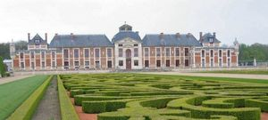
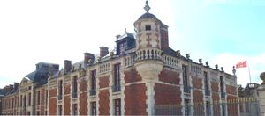
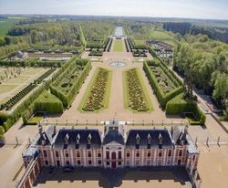
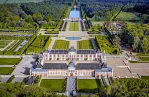

Recensement Jean-Claude Truffet
| Département | 27 — Eure |
| Canton | Le Neubourg |
| Commune | Le Neubourg |
| Type d'édifice | Palais |
| Période d'origine | XVI |
| Coordonnées GPS | 49° 10' 06" Nord, 0° 51' 34" Est |




CHAMP de BATAILLE, en 935, une grande bataille sest déroulée sur ces lieux même entre deux familles, celle qui régnait sur le Cotentin, menée par Guillaume Longue Épée, et celle de Robert le Danois. La première famille a gagné, et grâce à cette victoire, la Normandie a conquis son indépendance. En 1651, Alexandre de Créqui, frondeur et ami du prince de Condé, est exilé par Mazarin, qui gouverne la France pendant la minorité du roi Louis XIV. On le condamne à résidence. Créqui décide alors de se faire construire un palais magnifique qui lui rappellerait ces fastes de la Cour, que jamais plus il nallait connaître. On suppose quil sest adressé au meilleur architecte et au meilleur jardinier, André Le Nôtre. Malheureusement, faute de charge à la Cour et devenu un paria, Créqui est mort ruiné en 1702. Cest son neveu, le marquis de Mailloc, qui hérita de ses dettes et de son patrimoine. Champ de Bataille ne lintéressait sans doute pas. À sa mort, en 1754 il légua le château à son neveu Anne François dHarcourt, duc de Beuvron et gouverneur de Normandie, qui fit de Champ de Bataille sa résidence principale, décidé à montrer sa puissance et son pouvoir. Mais à cette époque, le château était très délabré et les décors du XVIIe siècle malheureusement irrécupérables. DHarcourt entreprit alors dénormes travaux pour rétablir les fastes dantan. La révolution a interrompu cette tâche gigantesque qui est restée inachevée. Comme beaucoup de maisons nobles à cette époque, Champ de Bataille fut pillé et durant de longues années abandonné. Au retour de la monarchie.
CHAMP de BATAILLE, le domaine fut vendu en 1810 par les héritiers du duc de Beuvron, et passa de main en main pendant tout le XIXe siècle Personne ne sest soucié dy faire des travaux importants, et le château de Champ de Bataille a été simplement maintenu dans ce que lon appelle un état "hors deau". Il restait donc beaucoup à faire pour lui redonner sa magnificence dautrefois. en 1903 le comte d'Harcourt se porte acquéreur, le revend en 1936 à la ville de Neubourg en 1947 rachat par le duc d'Harcourt pour célébré le millénaire de la famille d'Harcourt. Cest Jacques Garcia, décorateur, le propriétaire actuel, qui a repris cette charge difficile en 1992. Elle est maintenant accomplie, et il souhaite aujourdhui vous faire partager cette expérience exceptionnelle. Les jardins, seul un bout de croquis avait échappé à loubli, né de la main d'André Le Nôtre, ce document désignait à grands traits lemplacement de la Grande Terrasse, des vieilles broderies de buis, des anciens bosquets de part et dautre, ainsi que les proportions des Carrés de Diane et dApollon. Ces rares éléments dépoque ont été restitués scrupuleusement, et pour le reste, ce sont eux qui ont donné la mesure et la tonalité des nouveaux jardins. Passé lAvant-cour avec son échiquier, le visiteur franchit lArc du Créquois pour entrer dans le Carrousel. Le grand axe des nouveaux jardins peut être considéré, comme une évocation des différents degrés reliant lunivers matériel (corps de logis) vers lunivers immatériel.
Famille le Robert le Danois et Anne François dHarcourt
"
Champ de Bataille GPS : 49° 10' 06" Nord, 0° 51' 34" Est